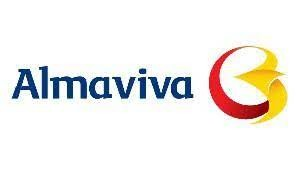
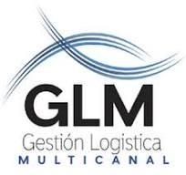

JEFE DE LOGISTICA
Diciembre 2023 - Abril 2024
5 meses
Bogota
WODEN | FUNCIONES:
Establecer estrategias y planes de acción que contribuyan a la coordinación, control y mejoramiento del procedimiento de logística en la areas de despacho y transporte.
Ejecutar el presupuesto de las areas de despacho y transporte de acuerdo con los lineamientos establecidos por la Compañía.
Garantizar y verificar el transporte, recepción, traslados a las bodegas de material del área de producción en cuanto a cantidades, seriales, referencias y condiciones de embalaje.
Analizar datos y métricas de rendimiento para identificar áreas de mejora e implementar cambios para aumentar la eficiencia y la rentabilidad del transporte.

COORDINADOR DE SLOTTING
Marzo 2021 - Octubre 2023
2 años 8 meses
Nacional
ALMAVIVA | FUNCIONES:
Estructurar y documentar metodología de implementación de slotting en los 32 centros de distribución de la compañía soportado en el flujo del WMS Bluyonder
Presentar propuestas de estantería para optimización de espacios y ahorros en costos operativo.
Realizar análisis de la rotación y clasificaion ABC de las mercancías, el espacio y demás variables implicadas para adaptar el slotting más conveniente para cada operación con base a la informaion del wms Bluyonder. Parametrizar Reabastos, ejecucion de tareas y analisis de confibilidad de las mismas.
Establecer y divulgar buenas prácticas de almacenamiento alineadas con el plan de slotting definido para las operaciones de almacenamiento.
COORDINADOR DE ALMACEN
Diciembre 2019 - Enero 2021
1 año 2 meses
Tenjo
95/24 COLOMBIA SAS | FUNCIONES:
Coordinador los flujos del almacen desde su recepcion, almacenamiento, picking y la definicon de sus metodos, reabastos, ciclicos, packing y facturacion.
Manejo y administración de un equipo de 50 personas integrado por Supervisores, Analistas, personal operativo y cuadrillas de apoyo en los 3 turnos laborales.
Administrar bajo los parámetros de SAP BO y diversas aplicaciones desarrolladas para el óptimo desarrollo y flujo del almacén.
